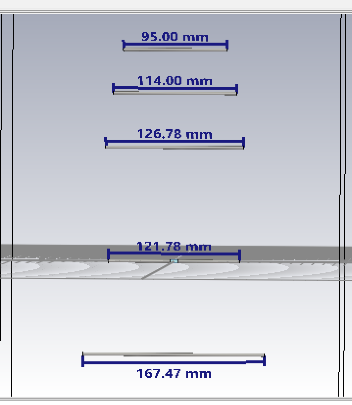
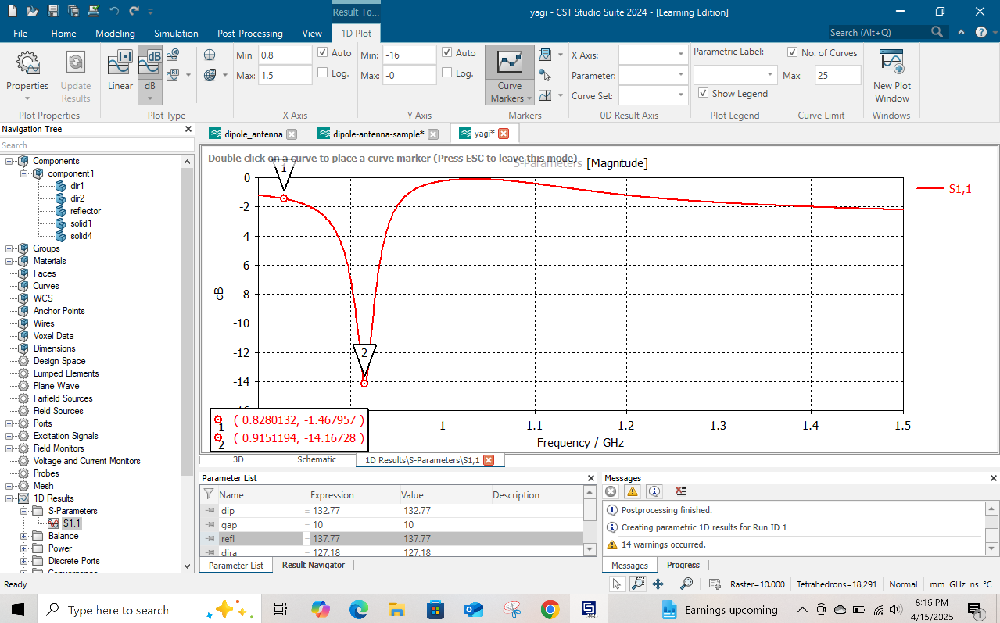
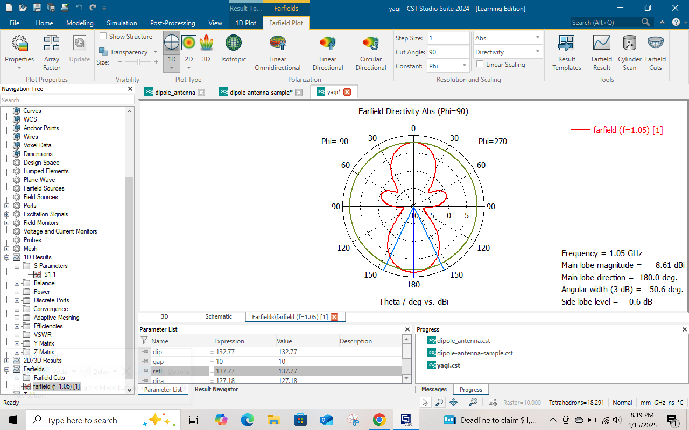
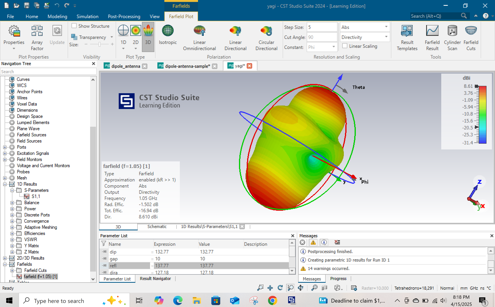
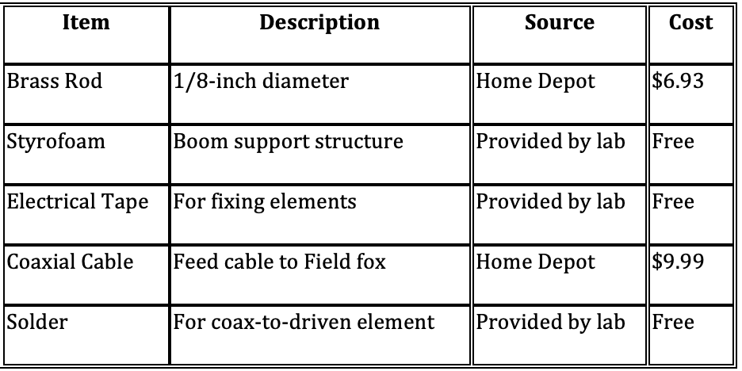

Introduction
The goal of this project was to design, simulate, and construct a directional Yagi-Uda antenna optimized for a 915 MHz frequency, commonly used in RFID and industrial wireless applications. Using CST Studio Suite, I modeled and tuned the antenna elements for maximum gain and directivity. The finalized design was then physically built, tested using a spectrum analyzer, and used in a campus-wide "Fox Hunt" signal-tracking competition. This project strengthened my skills in electromagnetic simulation, RF design principles, and hands-on antenna fabrication.
Design Specifications
• Design Frequency: 915 MHz
• Gain : -14.16 dBi
• Elements Lengths:
- Reflector : 162.45mm
- Driven Element (Dipole): 121.78 mm
- Element 1 : 126.73 mm
- Element 2 : 114 mm
- Element 3 : 95 mm
- Gap in Dipole : 10 mm
• Spacing:
- Reflector to Dipole : 86 mm
- Driven Element (Dipole) : Centered at the origin
- Director 1 to Dipole : 105 mm
- Director 2 to Dipole: +50 mm from elem1
- Director 3 to Dipole : +40 mm from elem2
Simulation
Antenna Schematic
S11 Graph
2-D Radiation Graph
3-D Radiation Pattern
Bill of Materials
Photos
Antenna Gain and Frequency Meeasurement